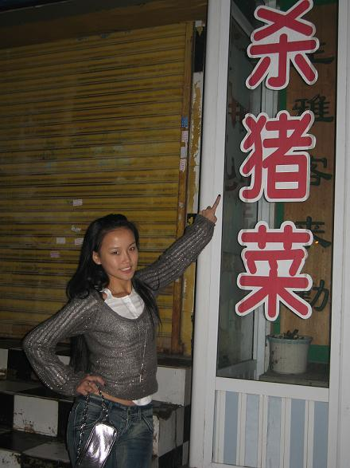
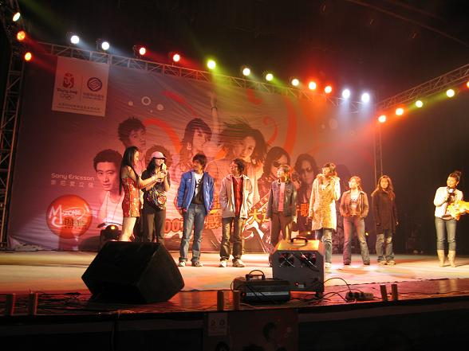
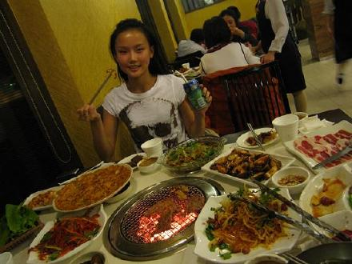
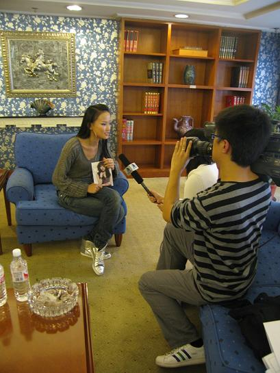

大连是座美丽的城市,小的时候就听爸爸说大连烤肉和海鲜很好吃,这次终于可以尝一下了.第一次去大连,从机场做汽车一直到酒店,高速公路,马路上的路灯都开得超级亮，而且每个灯都挨的很紧,市中心的商店和一些很俄罗斯风格的房子,每个地方都是灯火辉煌的,感觉好像大连用电都是免费的一样,虽然是晚上,但整座城市都被各种颜色的灯光照得格外明亮,夜景很美哦..哈
大连的饭店都关的好早哦,平时我是不太吃肉的,这次一整天都饿着肚子就为了想到大连可以多吃点烤肉,没想到一路走来饭店都关门了,好不容易看到一家店开着,门口居然写着那么残忍的三个字:杀猪菜!叫我一个居士怎么忍心走进去呢,更不要说我坐下来吃了.听说大连的杀猪菜是很有名的,可我一听到这三个字就会联想到那些可爱的小猪被宰杀的那一目...啊...我的妈呀,真的太惨了,吃了会造孽的,不吃是积德.所以这也是我平时少吃肉的原因之一.希望大家少吃肉,爱护小动物,多积德,...

演出很顺利,同学都纷纷抢着上来和我一起做游戏,而且我发现这所以学校的同学都很会唱歌,我旁边的这个女生就立刻学会了唱<痒>.

烤肉好好吃噢,和上海的烤肉比起来,味道真的很不一样,看起来就很美味,55555其实大部分都是我的同事吃的,没办法,不可以胖的....告诉大家我最喜欢吃鸡脆骨,但是那天已经很晚了,晚上吃特别容易发胖,所以我吃的好几块都是咬了几口尝了味道再吐出来的...

每次做访问都会紧张,因为我不太会讲话,所以到现在还是会紧张,如果做访问可以随便开玩笑就好了...

大连的演出让我很感动的事情是,我FANS当中有个叫小镇的,由于她不在大连所以来不了看我演出,但是小镇的姐姐在大连念书,那天小镇姐姐为了来看我,居然逃课.演出的地方离她学校满远的,她也千里迢迢来看我,让我很感动,最让我惊喜的是:小镇姐姐说,她和小镇是双包胎哦.也就说我见到了姐姐也等于见到了小镇,她姐姐说她们两个人样子没什么很大区别...在这里再感谢一下小镇姐姐:)